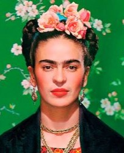
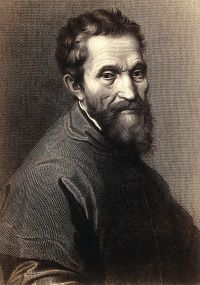

Aqui você pode conhecer melhor sobre os artistas presentes na exposição
Antonio Canova (1757–1822) - Escultor neoclássico italiano, considerado o maior escultor de seu tempo. Suas obras, como
Psique e Eros e Theseus and the Minotaur, destacam-se pela delicadeza, equilíbrio e inspiração na antiguidade clássica.
Canova trouxe à escultura uma combinação de beleza idealizada e realismo detalhado.
Fídias (c. 490–430 a.C.) - Escultor grego da Antiguidade, reconhecido como um dos maiores artistas da Grécia Clássica.
Foi o responsável pela grandiosa estátua de Atena Partenos, no Partenon, e pela estátua de Zeus em Olímpia, uma das Sete Maravilhas do Mundo Antigo.
Sua obra combinava majestade e precisão técnica, influenciando a arte ocidental por séculos.

Frida Kahlo (1907–1954) - Artista mexicana cujo trabalho reflete suas dores físicas e emocionais, além de questões de identidade e cultura.
Sua obra mais icônica, As Duas Fridas, exemplifica seu estilo surrealista e sua habilidade em mesclar o pessoal e o universal em suas pinturas.
Gian Lorenzo Bernini (1598–1680) - Principal escultor do Barroco italiano, conhecido por sua habilidade em capturar movimento e emoção.
Obras como Medusa e O Êxtase de Santa Teresa demonstram seu talento em transformar mármore em cenas dramáticas e dinâmicas,
além de sua contribuição significativa para a arquitetura de Roma.
Leonardo da Vinci (1452–1519) - Um dos maiores gênios do Renascimento, Leonardo foi pintor, cientista, inventor e escritor.
Suas obras-primas, como Monalisa e A Última Ceia, continuam a fascinar pelo realismo, uso inovador da perspectiva e mistério.
Além da arte, seus cadernos revelam uma mente curiosa e pioneira em diversas áreas do conhecimento.

Michelangelo Buonarroti (1475–1564) - Escultor, pintor e arquiteto renascentista italiano, Michelangelo é responsável por
algumas das maiores obras de arte ocidentais, como A Criação de Adão na Capela Sistina e a escultura David.
Sua maestria técnica e profundidade emocional definiram o padrão do alto Renascimento.
Romero Britto (1963–presente) - Artista brasileiro internacionalmente conhecido por seu estilo pop-art, que mistura cores vibrantes,
formas geométricas e influências do cubismo. Sua obra Mona Cat exemplifica seu tom otimista e acessível, frequentemente usado em campanhas publicitárias e exposições públicas.
Sandro Botticelli (1445–1510) - Pintor italiano do Renascimento, Botticelli criou algumas das imagens mais icônicas da arte ocidental.
O Nascimento de Vênus é um exemplo perfeito de seu estilo lírico e da representação da mitologia clássica com um toque de fantasia e idealismo.
Tarsila do Amaral (1886–1973) - Uma das principais figuras do modernismo brasileiro, Tarsila foi membro do movimento antropofágico,
que buscava reinterpretar a cultura europeia sob uma perspectiva brasileira. Obras como Abaporu e Operários exploram temas sociais, culturais e identitários do Brasil.
Vincent van Gogh (1853–1890) - Pintor pós-impressionista holandês, cuja vida foi marcada por lutas pessoais e genialidade artística.
Suas obras, como A Noite Estrelada, Girassóis e Terraço do Café à Noite, são conhecidas por suas cores intensas, pinceladas expressivas
e profunda carga emocional. Van Gogh influenciou fortemente a arte moderna, apesar de ter vendido poucas obras em vida.